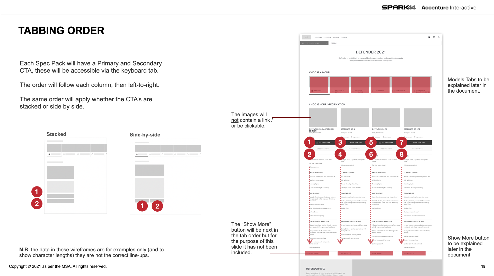
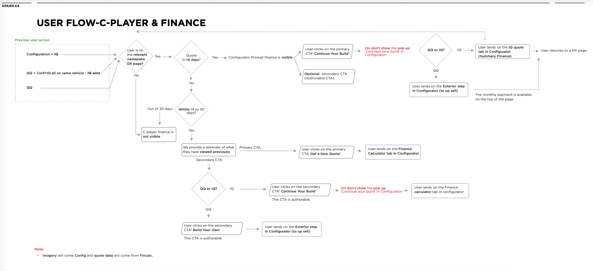

01 — Challenge
Two iconic brands, fragmented digital journeys.
Jaguar Land Rover operates two distinct premium automotive brands, each with their own digital presence, configurator tools, owner portals, and dealer experiences. Over time, these had grown in silos — leading to inconsistent UX, duplicated effort in the design and dev teams, and digital experiences that couldn't keep pace with the premium expectations set by the physical products.
The project required rethinking the architecture across both brand experiences — finding what was shared and what needed to remain distinct — while dramatically improving usability in the highest-value touchpoints: the vehicle configurator and the test drive request flow.

02 — Discovery
Mapping two ecosystems to find the hidden patterns.
I began with a comprehensive audit of both brand's digital estates — mapping every touchpoint a customer might encounter from initial research through to ownership. This revealed 47 distinct user touchpoints across the two brands, with significant overlap in underlying user needs but almost no shared design patterns or components.
Stakeholder interviews across the digital, marketing, and product teams revealed a common frustration: designers and developers were rebuilding the same components independently for each brand, with no shared library to draw from. A unified design system foundation was the critical first step.
Configurator drop-off
Only 31% of users who started the vehicle configurator completed it — the complexity and length were driving abandonment at every step.
Duplicated design effort
Analysis found that 64% of components were rebuilt independently for each brand — a significant drain on resource and quality.
Owner portal friction
Existing owners struggled to find service history, manage subscriptions, and access in-car features from the digital portal.
Mobile gap
Vehicle configuration was almost exclusively desktop — mobile accounted for 58% of traffic but under 12% of completed configurations.
03 — Design
A shared foundation. Two distinct expressions.
The design system approach created a foundation layer shared across both brands — covering layout, spacing, interaction patterns, form components, and the configurator engine. On top of this foundation, each brand's distinct visual language was applied: Land Rover's rugged confidence versus Jaguar's sleek athleticism.
The configurator was redesigned from the ground up. A complex, multi-step process was transformed into a streamlined visual journey — with smart defaults based on popular configurations, a persistent summary panel that kept the current price visible at all times, and a mobile-first interaction model that worked as well on a phone as on a 27-inch monitor.

04 — Results
Premium design, proven commercial impact.
The redesigned configurator saw a 52% increase in completion rate, driven largely by the new mobile experience. Test drive requests — the key conversion metric for the business — increased by 38% across both brands within 12 weeks of launch.
Internally, the shared design system reduced component duplication by 60% and cut the time to design new features by an estimated 40% — freeing the team to focus on higher-value work.
Dealer Conversion
+41%
Lead Generation
+168%
Vehicle Configuration
+114%
Vehicles Configured
45M globally

"Paria brought a level of strategic thinking and design rigour that we rarely see. She understood the complexity of working across two premium brands and delivered a system that works brilliantly for both."— Head of Digital Experience, Jaguar Land Rover